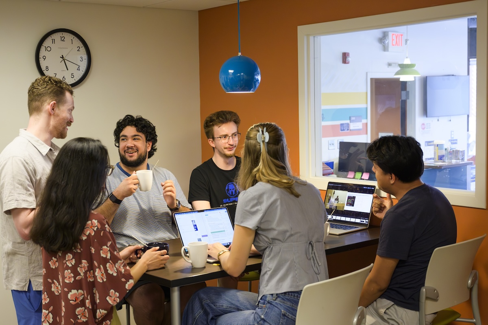
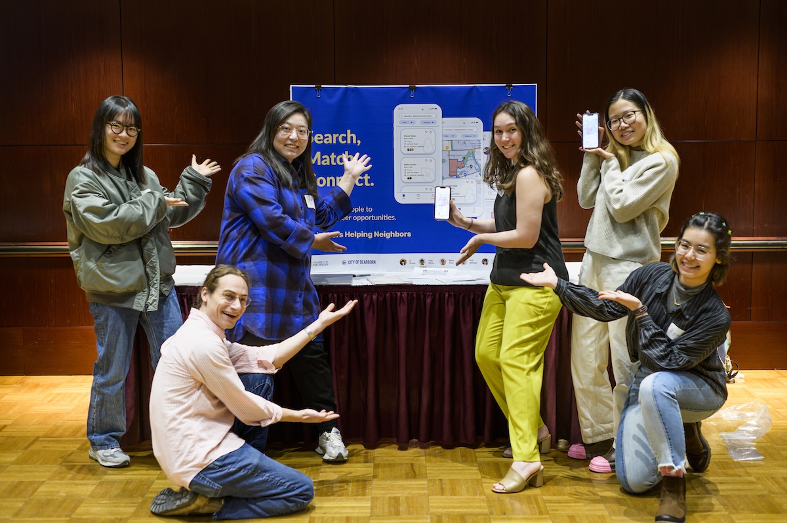

Manage Your Project
A successful engaged learning project requires consistent organization and communication. Review your project plan regularly, monitor upcoming deadlines, and discuss whether the team has the time and resources needed to complete its commitments. When circumstances change, update the plan and communicate those changes to the partner.

Stay Organized
- Review assignments and deadlines during team meetings.
- Record decisions, action items, and responsible team members.
- Store project files in an agreed-upon shared location.
- Notify the team and partner early when a deadline may be missed.
- Update the project scope when new needs or limitations emerge.
Communicate With Your Partner
Regular communication helps the team confirm that its work continues to support the partner’s goals. Provide concise progress updates, ask for clarification when needed, and avoid waiting until the end of the project to request feedback. Partners should have meaningful opportunities to influence decisions throughout the experience.
Prepare for Partner Check-Ins
- Summarize the work completed since the previous meeting.
- Identify decisions that require partner input.
- Explain challenges that could affect the project.
- Confirm upcoming tasks, responsibilities, and deadlines.
- Document the partner’s feedback and agreed-upon next steps.
Navigate Challenges and Feedback
Disagreement and unexpected challenges are normal parts of collaborative work. Address concerns early and focus conversations on the project’s shared goals rather than individual blame. Listen carefully, ask questions, and confirm that everyone understands the proposed solution.
Use Feedback to Improve the Work
Treat feedback as information that can strengthen the project. Consider who provided the feedback, whose experiences may be missing, and how a proposed change could affect users or community members. Record major revisions so the team can explain how the project developed over time.

Reflect Throughout the Experience
Reflection should occur throughout the project, not only after it ends. Periodically consider what you are learning, how your assumptions have changed, and whether the work remains ethical and mutually beneficial. These reflections can help improve the current project and prepare you for future professional experiences.